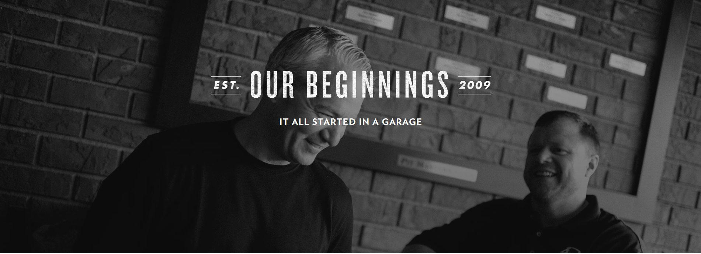
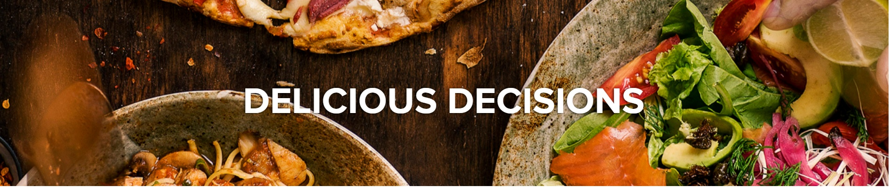
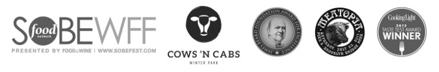

<!DOCTYPE html>
<html>
<head>
	<link href="https://fonts.googleapis.com/css?family=Roboto+Mono" rel="stylesheet">
	<link href="https://fonts.googleapis.com/css?family=Cute+Font" rel="stylesheet">
	<link href="https://fonts.googleapis.com/css?family=Roboto+Mono" rel="stylesheet">
	<link href="https://fonts.googleapis.com/css?family=Titillium+Web" rel="stylesheet">
	<link rel="stylesheet" href="about.css">
	<link rel="shortcut icon" type="image/x-icon" href="rerto.jpg">

	<title>About us</title>
</head>
<body>
	<div>
	<div class="nav">
		<a href="restaurant.html" id="rerto">Retro foods</a>
		<a href="restaurant.html">Home</a>
		<a href="menu.html">Menu</a>
		<a href="reserving.html">Delivery</a>
		<a href="rateus.html">Rate us</a>
		<a href="contact.html"id="cont">Contact us</a>
				<a href="https://www.facebook.com"id="f"></a>
	</div>
	<br>
	<div>
<p></p>
</div>
<div>
	
</div>
<div>
	<h1><span id="s1">“Retro Foods had its humble beginnings.</span><span id="s2"> Just me, a
		<br>smoker, and an age-Young challenge—cooking
		<br>brisket."</span></h1>
		<br>
		<p id="p1">John Rivers never set out to create the most successful BBQ chain in Florida. He’s <br>
			not a classically trained chef or graduate of culinary school. It was in Texas that he <br>
			found the two loves of his life: his wife and the delicate art of brisket. And it’s been <br>
			 those very two godsends that inspired Retro as we know it.</p>

		<p id="p2">John spent 20 years in the healthcare industry before retiring as president of a <br>
			billion-dollar company. During that time, he had the opportunity to travel the <br>
			country, honing his taste and talent for brisket perfection. As he soaked up the <br>
			flavors and practices of ‘cue fare countrywide, John’s dream of de-regionalizing <br>
			BBQ was born.</p>

</div>
<div >
	<iframe src="retro.mp4" id="video"></iframe>

</div>
<div>
	<h2><span id="s3"> "This was never supposed to be a restaurant. </span><br> <span id="s4">
		 My definition of helping meant doing what felt <br>
		  most natural when comfort was in order—feed <br>
			those in need."</span></h2>
	<p id="p2">		Retro Smokehouse began with the launch of the “Barbecue <br>
	Ministry” in 2004, when John hosted a cookout fundraiser to support a local family <br>whose young daughter was battling cancer. This one event resulted in a passion <br>for supporting local schools, churches, and charitable organizations, and a few <br>years later, smoking thousands of pounds of meat out of a garage just wouldn’t cut <br>it anymore.</p>

	<p id="p2">After trials, tribulations, and a whole lot of burnt ends, we finally flipped that “Hot <br> Brisket Now” sign on in October of 2009. Within the first hour, a line had formed <br>out the door…and then around the corner.</p>

	<p id="p2">Today, we have several locations across the state of Florida, with plans for<br> continued expansion and more than 1,000 amazing folks on our 4 Rivers team.<br> Most importantly, the Barbecue Ministry remains our foundation and<br> focus, and will until the cows come home.</p>
</div>
<div>
	
</div>
<div>
	<h3 id="s3">Awards & Recognition</h3>
	<p id="p2">Rerto's concept immediately attracted local and national recognition, with two <br>invitations to cook at the prestigious James Beard House in NYC, four consecutive <br>invitations to present at the 2011 – 2014 Food Network South Beach Wine & Food Festival, <br>and appearances on NBC and FOX morning shows. He’s also been celebrated by USA Today,<Br> Paula Deen Magazine, FOOD Magazine, Cooking Light, Food & Wine, Cigar Aficionado,<br> Restaurant Business, and TravelandLesiure.com, and named a finalist for the 2013 Florida <br>Ernst and Young Entrepreneur of the Year Award. In 2014, John Rivers published The <br>Southern Cowboy Cookbook, a kitchen masterpiece that’s destined to become a classic.</p>


</div>
<div>
	<h4 id="s3">Our Mission & Purpose</h4>
	<p id="p2">We exist to use our God-given gifts to support the local <br>
		community through exceptional products, steadfast customer service,<br> and uncompromised integrity.</p>
		<p id="p2">At the heart of our culture is a keen appetite for contributing back into the <br>growth of the community, and with roots in ministry, we’re dedicated to supporting <br>those in need. Good food and good people will build a stronger, safer, and kinder <br>community. Join us in backing the multitude of impactful charitable organizations in <br>our area, including Coalition for the Homeless, Arnold Palmer Medical Center, <br>Foundation for Foster Children, Elevate Orlando, and the Florida Hospital and <br>Foundation.</p>

</div>
<div>
	<h5 id=""><span id="s3">Our New Endeavors </span><br><span id="s2">Something savory, something sweet. More <br>ways than one to get your fill.</span></h5>
	<p id="p2">Don’t get us wrong, we love the Smokehouse to pieces. But in <br>
	 honor of our family’s roots, we’re adding to the stack with Southern<br>
	  comfort foods at The COOP and from-scratch desserts made by The Sweet Shop.</p>
</div>
<div>
	<h6 id="s3">Community Recognition</h6>
	<p id="p2">In summer of 2017, the Rosen School of Hospitality honored Chef <br>
		John Rivers by inducting him into the Central Florida Hospitality Hall <br>
		of Fame. This video, created by the university, was put together and played at <br>
		The Pineapple Ball as a tribute to John. We are very humbled and grateful for this <br>recognition.</p>
</div>
<div>
	
</div>

<footer><marquee>&trade; This company was copyrighted since 1998.</marquee></footer>
</div>
</body>
</html>
